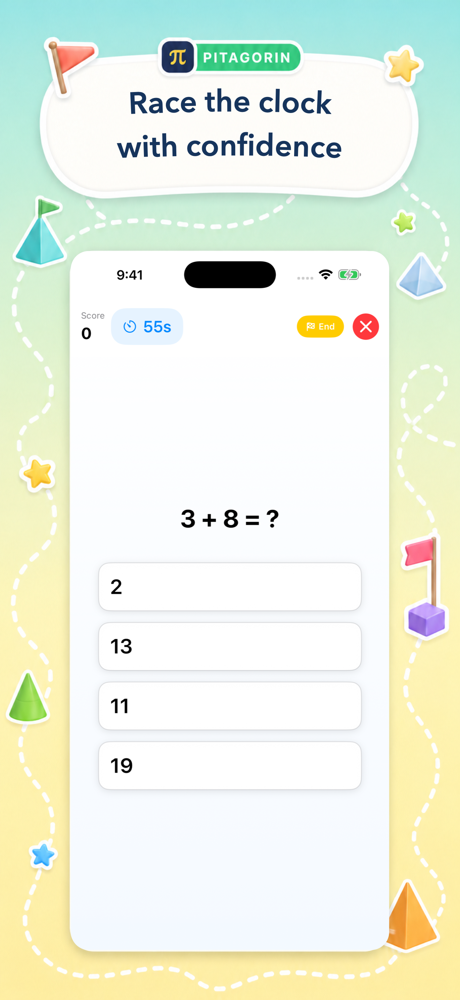
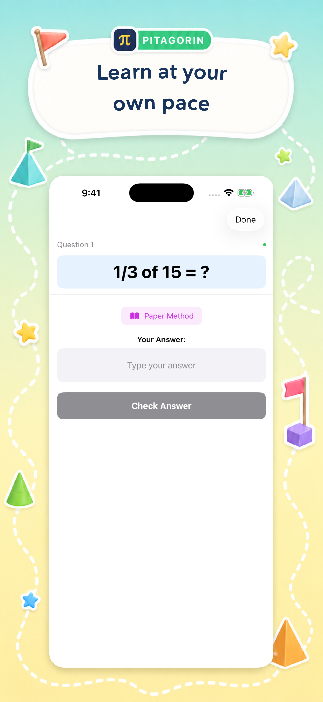
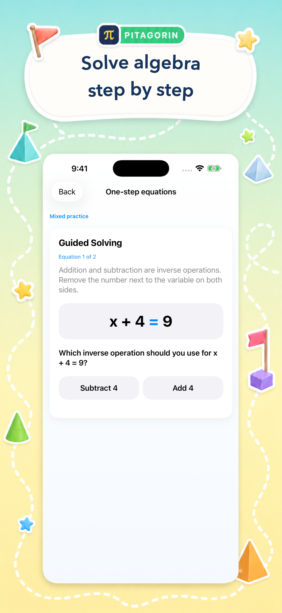

Arithmetic games
Addition, subtraction, multiplication, division, fractions, decimals, percentages, powers, roots, and more across Easy, Medium, and Hard difficulties.
Inside Pitagorin
Choose a focused practice session, learn a reliable paper method, or turn math into a game. Pitagorin keeps the experience flexible for children, teens, and adults while the learning stays intentional.

Pick your path
Different learners need different entry points. Pitagorin gives each mode a clear job, from first facts to higher-level reasoning.
Addition, subtraction, multiplication, division, fractions, decimals, percentages, powers, roots, and more across Easy, Medium, and Hard difficulties.
Untimed, text-input practice with operation-specific visual hints for learners who benefit from thinking at their own pace.
Learn the 1–12 tables step by step, then return to weak facts with Smart Review or test fluency in a short sprint.
Build an exam, choose operations and difficulty, submit handwritten work, and revisit the full history with tutorial playback.
A grade-organized path from foundations through equations, proportional thinking, linear relationships, systems, and exponents.
Reach a target number or balance both sides of an equation. Hints, undo, replayable challenges, and difficulty-specific scores make reasoning visible.
Learning, made visible
A quick challenge can lead to a clear explanation. Real app screens show how Pitagorin moves between play, practice, and guided support.


The learning loop
Pitagorin is built around short sessions that make progress easy to see. A child can play, inspect a method, and come back to the facts or ideas that need another try.